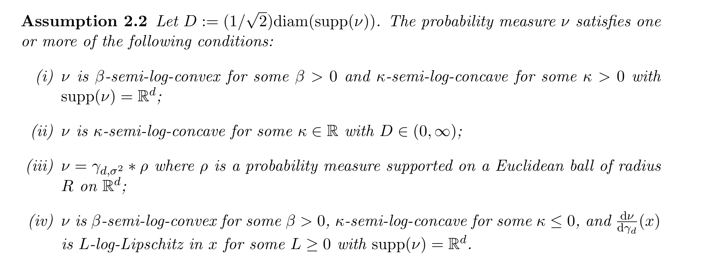
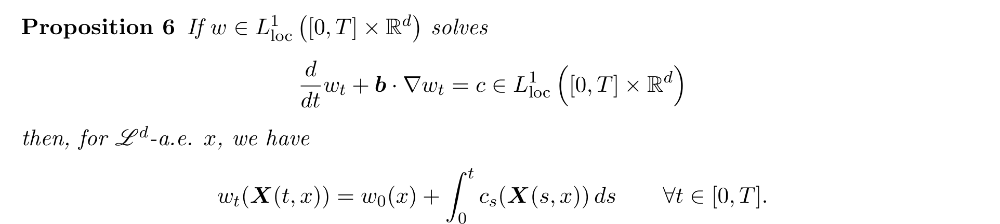

The strongest endpoint results still needed restrictive geometry. In particular, this did not reach discrete distributions or low-dimensional manifolds.
We significantly relax this. For the talk, I will not explain how yet; first we only need the proof architecture.

For $t\in[0,1)$: a local-Lipschitz mass-conservation formula. Pushing to $t=1$ is a different problem, so we need new endpoint techniques before the results.